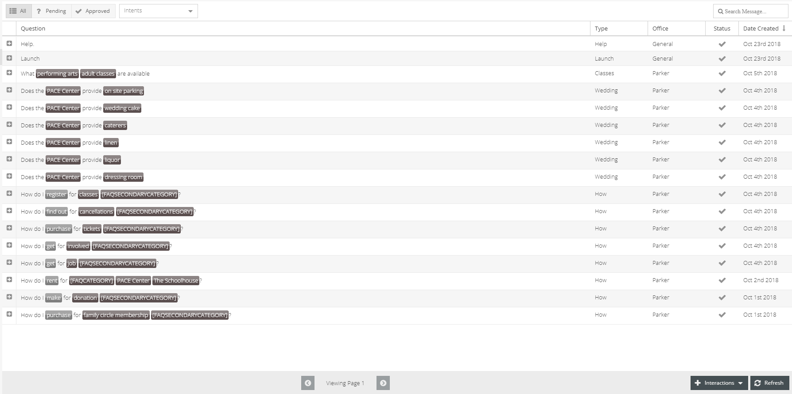

Interactions¶
This section was designed to best assist you to create and edit interactions. Using values, created within the Slots section in Settings, you will identify the information your community members will be requesting. You will have the ability to type the response to the interaction and connect any open source data to communicate.
Every skill starts with two interactions: Help and Welcome. Specify the skill help and welcome messages.
Features Within Interaction Grid¶
- Filter Interactions
- Interaction Status
- Click on buttons to the top left
- All | Pending | Approved
- Intents Filter
- Click and down arrow-key to intent and hit enter
- Type name of intent and hit enter
- Search Bar
- Type text to search response for a particular value
Interaction Caching¶
What is question caching? Question caching is the process of saving the response to a question. This saved response is then used the next time that same question is asked. By saving certain responses we improve performance (response time) and resource consumption (reduced database access and server load). Response times are improved because we already have the answer before the question is asked. Resource consumption is reduced because we do not need to query the database for our response and the server is freed up to handle other requests improving response times. Responses that are saved have a time to live (ttl). The time to live (ttl) is used to determine how long a saved response should be used. The saved response is deleted after the time to live (ttl) expires. When any questions are editing in the manager and saved any cached results related to that question is also cleared out in order to show the latest information. This is also true for when New Feeds or Event Calendars are updated.
When to use caching? Question caching should be used when the answer to a question is independent of the user asking the question. If two people asked the same question would they get the same response? If the answer is yes then that question can probably be cached. An example of a cache-able question is ‘Tell me today’s news’. If five people asked this question they would all get the same response. But if the question was changed to ‘Tell me news near me’ then this response would not be cached because it is specific to the user.
How long should a response be cached (time to live or ttl)? The time to live is determined by how long that response is valid. When in doubt make the time to live shorter rather then longer. Better to send a fresh response to the user rather than one that’s out of date and stale. If the question uses a Connection and you know the data is updated every hour then you probably want to set it between 5 min to 1 hour depending on how frequent you want it to use the latest data. If you know your data updates every day then you typically set your ttl higher.
In an effort to track and improve caching we track when a cached response or a fresh response is sent to the the user and is shown in the logs.
You can see Interaction Guides here: Interaction Guides